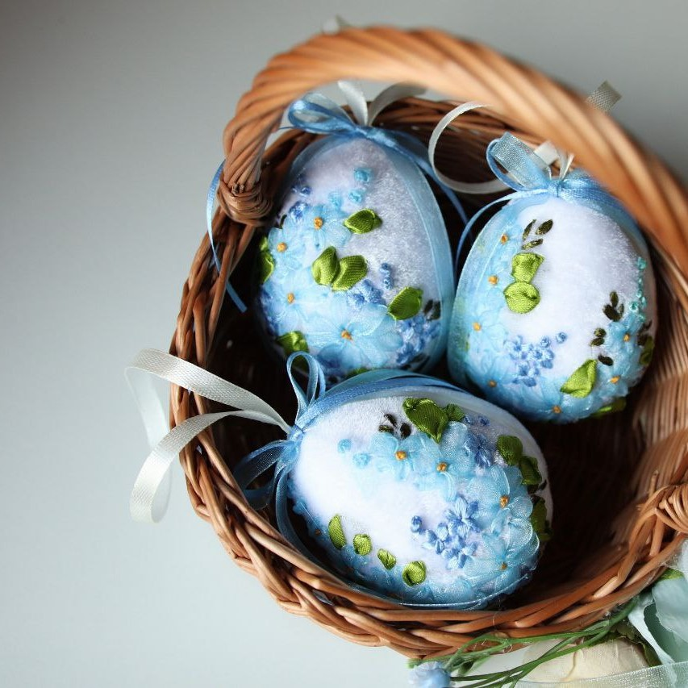
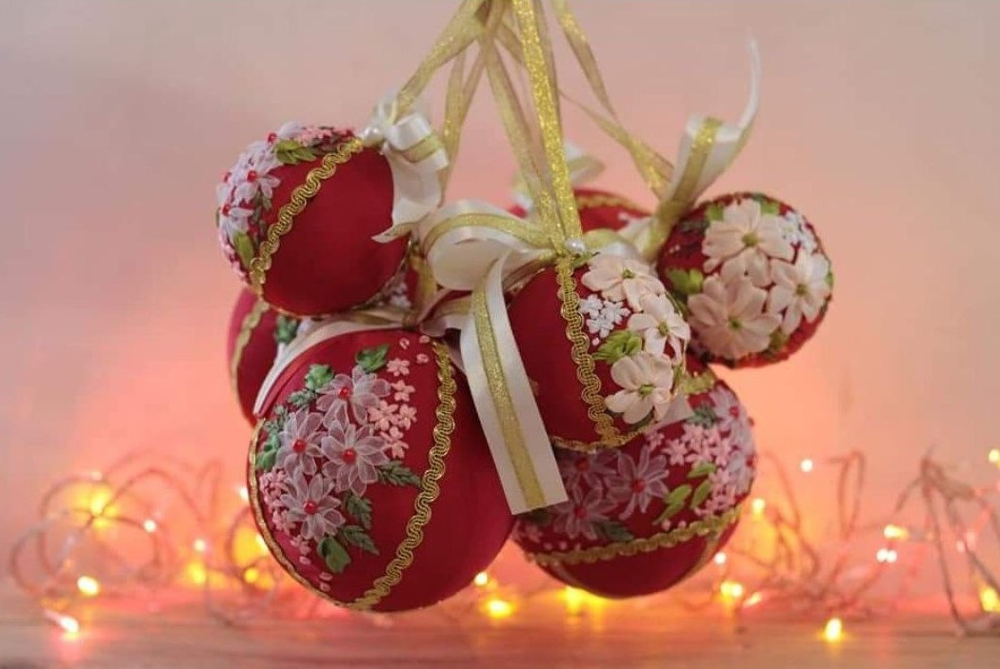

Оригінальнальні подарунки ручної роботи
- Інтернет-магазин вишивки стрічками
- Чудові подарунки для найрідніших
- Вишитий декор для вашого затишку
- Поєднання стрічок та творчої душі
Перглянути каталог
Каталог товарів
 |
 | ||
|---|---|---|---|
| Великодній декор | Новорічний декор | Еко-сумки | Плаття |
Про магазин DecorVidKot
Україна - дуже творча країна. Ми хочемо популяризувати рукоділля і зробити його легким і доступним. Ми займаємося улюбленою справою.
Вишивка – це давнє та дуже символічне мистецтво. Наші прабабусі створювали візерунки з переплетення ниток, вірячи, що тим самим створюють потужний оберіг для кожного члена сім'ї, ми сьогодні вільні вибирати будь-яке зображення, прикрашаючи їм свій будинок.
Спочатку ми вишивали для себе, проте згодом зрозуміти, що наші вироби можуть бути корисними і для інших.